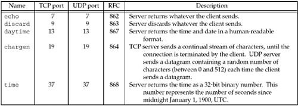

| [ Team LiB ] |
|
2.12 Standard Internet ServicesFigure 2.18 lists several standard services that are provided by most implementations of TCP/IP. Notice that all are provided using both TCP and UDP and the port number is the same for both protocols. Figure 2.18. Standard TCP/IP services provided by most implementations. Often these services are provided by the inetd daemon on Unix hosts (Section 13.5). These standard services provide an easy testing facility using the standard Telnet client. For example, the following tests both the daytime and echo servers:
In these two examples, we type the name of the host and the name of the service (daytime and echo). These service names are mapped into the port numbers shown in Figure 2.18 by the /etc/services file, as we will describe in Section 11.5. Notice that when we connect to the daytime server, the server performs the active close, while with the echo server, the client performs the active close. Recall from Figure 2.4 that the end performing the active close is the end that goes through the TIME_WAIT state. These "simple services" are often disabled by default on modern systems due to denial-of-service and other resource utilization attacks against them. | |||||||||||||||||||||||||||||||
| [ Team LiB ] |
|